Merhaba sevgili öğrenci! Bugün seninle Dünya'mızın sırlarını keşfetmeye çıkacağız. Dünya'nın üzerinde durduğumuz kara tabakası nasıl oluşmuş, içinde neler var, Dünya nasıl hareket ediyor ve bu hareketler bizim hayatımızı nasıl etkiliyor, hepsini öğreneceğiz!
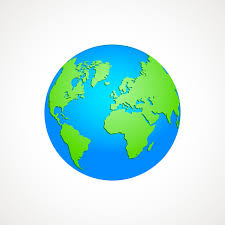
Sevgili öğrenci, üzerinde durduğumuz toprak ve taşlar, yani yer kabuğu, kayaçlardan oluşur. Kayaçlar, Dünya'mızın yapı taşlarıdır.
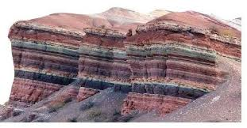
Kayaçlar çok önemlidir çünkü madenleri içlerinde barındırırlar. Madenler ise günlük hayatta kullandığımız birçok eşyanın ham maddesidir.
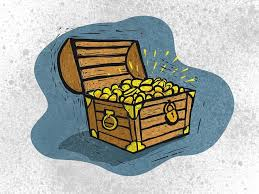
Tıkla ve Öğren!
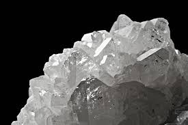
Tıkla ve Öğren!
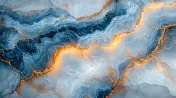
Tıkla ve Öğren!
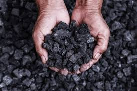
Tıkla ve Öğren!
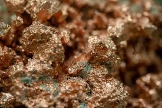
Tıkla ve Öğren!
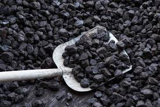
Tıkla ve Öğren!
Fosiller, çok uzun zaman önce yaşamış canlıların kalıntılarıdır. Bir canlı öldükten sonra, yumuşak kısımları yok olur. Ama sert kısımları (kemikler, kabuklar, dişler) toprağa gömülür ve zamanla taşlaşır. İşte bu taşlaşmış kalıntılara fosil denir.
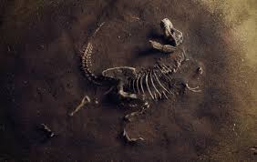
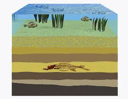
Bir canlı ölür ve yumuşak kısımları zamanla yok olur.
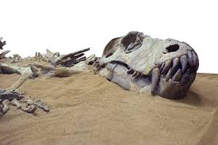
Canlının sert kısımları (kemik, diş, kabuk vb.) toprağa gömülür.
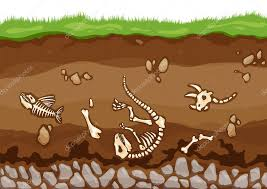
Üzerine çöken toprak ve kayaçlar zamanla katmanlar oluşturur.
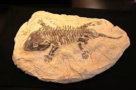
Milyonlarca yıl boyunca, mineraller canlı kalıntılarının yerine geçer ve taşlaşırlar.
Dünya'mız durmaksızın hareket ediyor! İki önemli hareketi vardır:
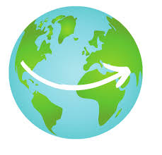
Dünya kendi etrafında döner. Bu harekete dönme hareketi denir.
Bu hareket 24 saatte tamamlanır ve gece ile gündüzün oluşmasını sağlar.
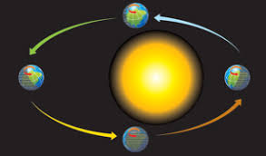
Dünya Güneş'in etrafında döner. Bu harekete dolanma hareketi denir.
Bu hareket 365 gün 6 saatte tamamlanır ve bir yıl sürer.
Dünya kendi etrafında dönerken, bir yarısı Güneş'e dönüktür ve o yarıda gündüz olur. Diğer yarısı ise Güneş'e dönük değildir ve orada gece olur.
Dünya Güneş'in etrafında dolanır. Bu hareket bir yıl sürer ve mevsimlerin oluşmasını sağlar.
Aferin! Bugün birlikte Dünya'mızı keşfettik. Öğrendiklerimizi hatırlayalım: